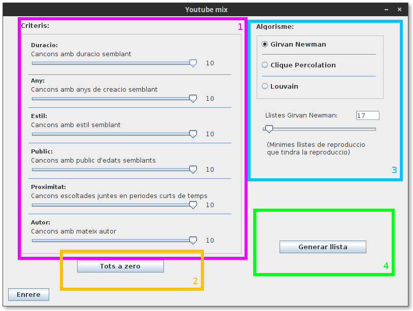
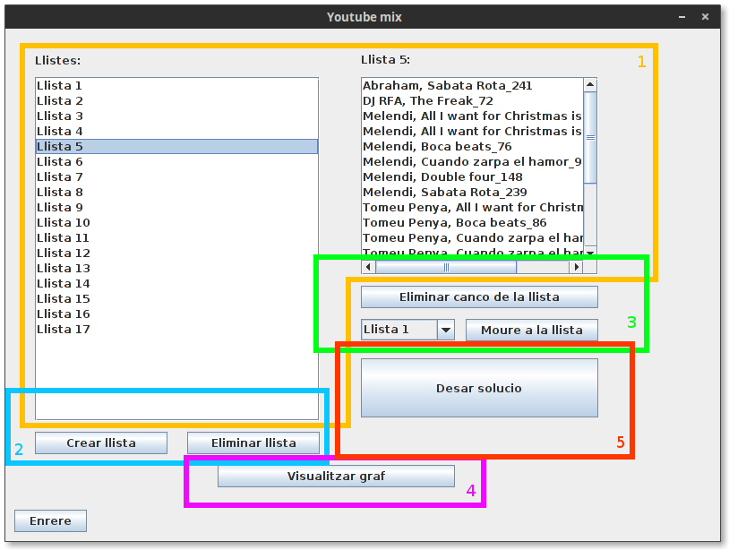
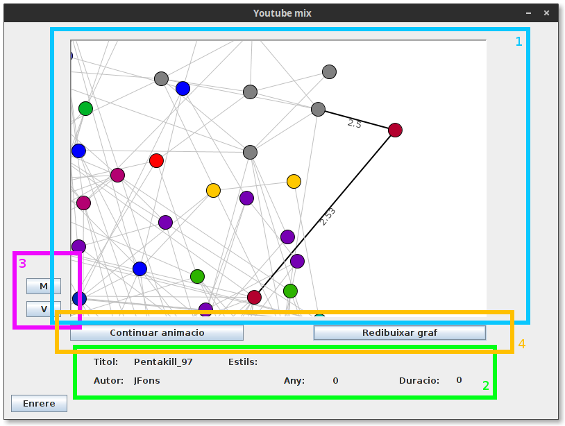

Generació de llistes¶
Es pot accecir a l’apartat de generació de llistes presionant en “Generar llistes” de la finestra principal.
Descripció de la interficie¶
Selector de ponderacions: Usant els selectors d’aquest apartat, es poden seleccionar el valor de les ponderacions que s’usaran per generar les llistes. Cada un dels valor es troba explicat en eel selector, i son els seguents
- Duració: Les llistes es generaran tenint en compte la duració de la cançó. Cançons amb duracions semblants es trobaran en les mateixes llistes.
- Any: Les llistes es generaran tenint en compte l’any en la que es va publicar la cançó. Cançons en anys pròxims es trobaran en les mateixes llistes.
- Estil: Les llistes es generaran tenint en compte els seus estils. Cançons del mateix estil es trobaran en la mateixa llista.
- Public: Les llistes es generaran tinguen en compte el public que acostuma a escoltarles. Si dues cançons les escolta gent d’edat semblant aniran a la mateixa lllista.
- Proximitat: Les llistes es generan tenint en compte cançons que s escolten normalment juntes. Dues cançons escoltades normalment juntes en un curt periode de temps pels usuaris aniran el les mateixes llistes.
- Autor: Les llistes es generaran tenint en compte l’autor de les cançons. Dues cançons del mateix autor aniran a la mateixa llista.
Tots a zero: Si es vol resaltar un sol criteri, pot ser interssant posar tots els criteris a zero facilment per tan de que sigui mes ràpid seleccionar el desitjat.
Selecció de l’Algorisme: El programa disposa de 3 algorismes entre els que triar per tal de generar les llistes, amb aquest selector es pot indicar quin algorisme s’ha d’usar.
Nota
L’algorisme Girvan Newman permet també indicar el nombre minim de llistes que es generaran, seleccionant “Girvan Newman” apareixarà un selector per tal de triar aquest valor. Els valors disponibles depenen del nombre de cançons que hi hagi en aquell moment al programa.
- Generar llista: Al presionar aques botó, es generaran les llistes amb els criteris desitjats. Si us plau, tingui paciencia, ja que depenent de l’algorisme i el nombre de cançons, aquest procés pot trigar bastant.
Edició d’una solució generada¶
Un cop generades les llistes, es poden editar per realitzar els canvis desitjats en aquest apartat.
- Consulta de la solució: En aquests apartats de la finestra es poden veure les diferents llistes generades. Seleccionant una de les llistes, es mostrarà al quadre de la dreta les cançons de les que esta formada.
- Edició de llistes: Seleccionant una llista es pot eliminar presionant el botó de “Eliminar llista”. Addicionalment, es poden afegir llistes buides a la solució per tal de mourehi cançons que es trobin a altres llistes.
- Edició de cançons: Seleccionant una cançó d’una llista, es pot eliminar la cançó seleccionada de la llista, també existeix la opció de moure la cançó a una altre llista. Per a fer això, selecciona la nova llista de les disponibles en el menú i presiona “Moure a la llista”.
- Visualitzar el graf: Presionant en aquesta opció es pot consultar el graf de la solució. Per a mes informació, consultar l’apartat “Consulta del graf”.
- Desar la solució: Es desaran les llistes que hem modificat al gust per a futura consulta. Aquestes llistes estan disponibles al historial.
Nota
Les llistes un cop desades no poden ser modificades. Realitzi totes les edicións desitjades abans de desarla.
Consulta del graf¶
1. Visualitxació del graf: En aquesta finestra es mostra el graf de la solució. Cada llista de reproducció te les seves cançons (Nodes) d’un color diferent. Els nodes que apareixen “transparent” son cançons que no es troben a la solució final. Això pot ser degut a que s’han eliminat manualment, eren en una llista que ha sigut eliminada o que l’algorisme l’ha eliminat com a part del seu procés de generació. Per a facilitar la consulta del graf, existeixen varies eines per moure’s per la vista.
- Clicar i arrossegar: Permet moure’s per el graf.
- La roda del ratolí: Permer fer zoom per veure amb mes detall zones concretes del graf.
- Presionar shift mentre es clica i s’arrossega: Permet girar el graf.
- Presionar ctrl mentre es clica i s’arrossega: Permet sesgar el graf per consultarlo des de una prespectiva diferent.
- Informació sobre la cançó: Al seleccionar un dels nodes amb el click esquerra del ratolí podem observar que s’activen dues funcions, primer de tot es pot consultar informació sobre la cançó seleccionada, que apareixerà en els espais per a text de sota del graf. També podem veure que els vertex (Les relacions amb altres cançons) de la cançó seleccionada es resalten, i es mostren les seves ponderacions.
- Mode Veure i mode moure: Mab aquests botons es pot cambiar entre el mode veure (V) i el mode moure(M). El comportament descrit al punt 1 es el corresponent al mode Veure, que es el mode per defecte. Al seleccionar el mode Moure, podem clicar un o mes nodes (Clicant i arrossegant de forma que els nodes quedin inclosos en el rectangle que apareix) i es podem moure. aquesta funció es util si tenim un graf tan poblar pue es dificil llegir el seu contingut o les seves relacions i les volem apartar.
- Control de la vista del graf: Per dibuixar el graf, el programa usa uns algorismes que apliquen forces als seus vertex i nodes a partir d’una posició aleatoria inicial. Amb “Redibuixar graf” tornem a posicionar aleatoriament els nodes i aplicar l’algorisme. Obtenint una nova distribució del graf. Amb aturar/continuar animació, podem pausar i continuar la animació dels vertex sen efectats per aquestes forces.
Nota
Obtenir un bon posicionament del graf es un problema molt complicat, per tant es molt possible que en grafs grans quedi tot molt junt i sigui dificil de llegir. Això es una limitació de l’algorisme i la velocitat del ordinador, i es dificil millorar el seu posicionament.